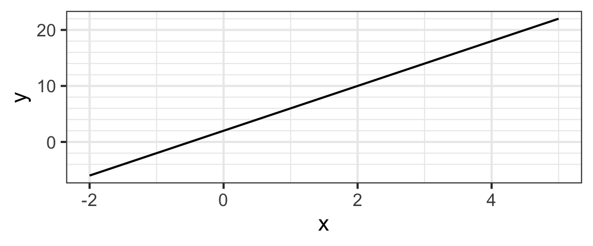
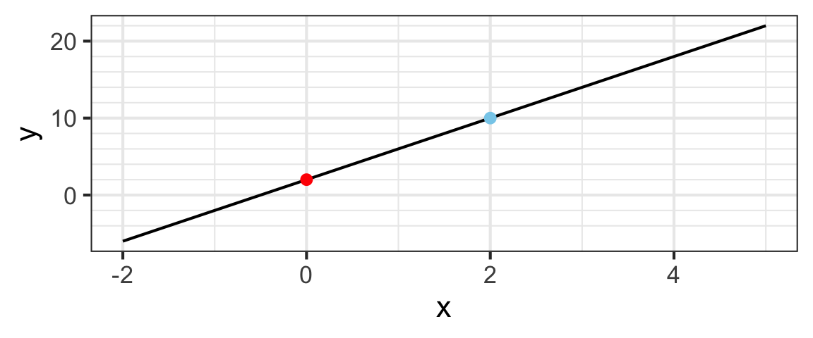

21 Fitting Linear Models in R
21.1 Learning Outcomes
This section, we’ve already considered strategies for planning a regression model - how many variables, and which ones, should be included as predictors? How does an analyst decide?
Now, here, we will also learn to fit the models in R and examine the results.
By the end of the section you will:
- Fit a multiple linear regression to a dataset in R, using multiple quantitative and/or categorical predictors
- State the equation of a linear regression model, based on a model description or an R model summary
21.2 Text Reference
Recommended reading for the materials covered in this tutorial can be found in:
- Beyond Multiple Linear Regression Chapter 1.4-1.6
- Course Notes Chapter 1
- Intro to Modern Statistics Chapter 3*
- Ecological Models & Data in R Chapter 9
- Statistical Modeling: A Fresh Approach Chapters 6-8
21.3 Quick review of lines
Consider the line below.

You may remember that lines have equations that look like
\[y = mx + b\]
where \(m\) is the slope and \(b\) is the \(y\)-intercept (the value of \(y\) when \(x = 0\)). So we can read off an equation for our line by figuring out the slope and the intercept.
Intercept and Slope
When \(x = 0\) on the line we just looked at, \(y = 2\), so the intercept is \(2\). It’s indicated by the red dot below:

The slope is computed as “rise over run”. We can compute this by comparing the red and blue dots and doing a little arithmetic.
Any two points on the line give the same slope. Chose two different points on the line and recompute the rise and the run. You should get the same slope.
So the equation for our line is
\[y = 4x + 2\]
Statisticians like to write this a different way (with the intercept first and with different letters):
\[ y = \beta_0 + \beta_1 x\]
\[y = 2 + 4x\]
So \(\beta_0\) (read “beta zero”) is the intercept and \(\beta_1\) (read “beta one”) is the slope.
21.4 Simple Linear Regression Equation
In your intro stat course (whenever that was!) you likely learned to fit simple linear regression models, and hopefully also to check the conditions that must hold for such models to give reliable results. (If you didn’t learn that condition-checking, known as model assessment, don’t worry - stay tuned for next week!) Some of the material early in our course may be review for some, but we will build on it rapidly too.
Here, we start with a reminder of the form of the linear regression equation, which is a small elaboration of the equation of a line we just saw:
\[ y = \beta_0 + \beta_1 x + \epsilon, \epsilon \sim \text{Norm}(0, \sigma)\]
- \(y\) is the response variable
- \(x\) is the predictor (or explanatory) variable
- \(\beta_0\) is the intercept. To fit the model to a specific dataset, we have to estimate the numeric value of this parameter.
- \(\beta_1\) is the slope. To fit the model to a specific dataset, we have to estimate the numeric value of this parameter.
- \(\epsilon\) are the residuals (or errors).
- They measure the vertical distance between an observed data point (\(y_i\) is the \(i\)th one) and the predicted (or fitted) value on the line for the same predictor variable value (\(\hat{y}_i\)). Much more about residuals later one!
- Residuals have a normal distribution with mean 0 and standard deviation \(\sigma\) (some value that we can estimate once we have the slope and intercept: we compute the fitted values \(\beta_0 + \beta_1x\) and subtract from the observed response variable values to get the residuals, then estimate their standard deviation \(\sigma\).)
21.5 Multiple Predictors
Often, statisticians consider more than one \(x\) variable. Why? Well, most response variables we are interested are associated with not just one but many different variables – in the language we just learned, many variables could be potential causes, confounders, mediators, or moderators (but not colliders…because we would not put those in the model).
With multiple predictors, the linear regression equation looks more like
\[ Y = \beta_0 + \beta_1 x_1 + \beta_2 x_2 + \dots \beta_p x_p + \varepsilon\] \[\varepsilon \sim \text{Norm}(0, \sigma)\]
where
- \(\mathbf{Y}\) is the response variable value,
- the \(\beta_0\) is the intercept,
- \(\beta_1, \dots \beta_p\) are the \(p\) “slopes”,
- \(x\)s are the \(p\) predictor variable values, and
- \(\varepsilon\) are the “errors” (since real data doesn’t all fall exactly on a line).
When we use data to estimate the \(\beta_i\)’s, we may write it this way:
\[ \hat Y = \hat{\beta}_0 + \hat{\beta}_1 x_1 + \hat{\beta}_2 x_2 + \dots \hat{\beta}_p x_p\]
- The hats on top of the the \(\beta\)s and \(Y\) indicate that they are being estimated from data (they are statistics or estimates rather than parameters now!)
- Note that the error term is gone now: we know exactly what our estimate \(\hat Y\) is, with no error.
- But \(\hat Y\) isn’t (usually) identical to \(Y\). The difference is our friend the residual:
\[ \begin{align*} \mbox{residual} = \hat\varepsilon & = Y - \hat Y \\ & = \mbox{observed reponse} - \mbox{model response} \end{align*} \]
Again, the hats indicate that we are making estimates using data (hats basically always mean this in statistics). Those “beta hat” and “Y hat” values come from our fitted model. The \(\hat \beta\)s are called the coefficients (or, more precisely, the estimated coefficients) or the “beta hats”.
You will sometimes encounter slightly different notation for linear models. Two common things are:
The use of \(b_0, b_1, \dots, b_p\) instead of \(\hat \beta_0, \hat \beta_1, \dots \hat \beta_p\).
Dropping of hats. In particular, the hat is often left off of the response variable when the model is presented with the numerical coefficient estimates plugged in.
And the models themselves go by different names: regression model, least squares model, least squares regression model, etc.
Don’t let these little differences distract you. If you focus on the important concepts, you should be able to navigate the notation, whichever way someone does it.
21.6 Matrix Formulation
The form we just saw for the simple linear regression equation can be pretty simply and intuitively extended to the case of more than one predictor:
\[ Y = \beta_0 + \beta_1 x_1 + \beta_2 x_2 + \dots \beta_p x_p + \epsilon\]
where \(\mathbf{Y}\) are the response variable values, the \(\beta\)s are the \(p + 1\) intercept and slopes, \(x\)s are the \(p\) predictor variable values, and \(\epsilon\) are the errors or residuals.
A problem
But…this form of the regression equation doesn’t keep track of the individual data points. The \(\mathbf{Y}\) up there (capitalized because it’s a random variable) is a vector, not a scalar – it’s a list of \(n\) response variable values. Same for the data. So maybe we could say something like:
\[\mathbf{Y}_i = \beta_0 + \beta_1 x_{i1} + \beta_2 x_{i2} + \dots \beta_p x_{ip} + e_i \]
but…OH, those double subscripts are already getting cumbersome!
A solution
We can fix that by writing our regression equation as a matrix equation. Let \(\mathbf{i} = <1, 2, 3, \dots n>\) be the indices identifying each observation in the data, and \(\mathbf{j} = <0, 1, 2, 3, \dots p>\) the indices identifying the different (intercept and) slope values.
Now let \(\mathbf{Y}\) be a length \(n\) column vector of response variable values, and \(\mathbf{\beta}\) a length \(p\) column vector of parameter values.
\(\mathbf{X}\) is a \(n\) by \((p+1)\) matrix, whose first column is a length \(n\) vector of ones, and whose other columns are length \(n\) vectors of values of the \(jth\) predictor variable. \(\mathbf{X}\) is often called the model matrix.
We then have the equation:
\[ \mathbf{Y} = \mathbf{X} \mathbf{\beta} + \mathbf{\epsilon}\]
(the same as before, but using vectors and a matrix to avoid all those pesky subscripts).
Comprehension Check: Model Matrix Size
If you said…
- 46 x 3, Think about what each column represents.
- 46 x 4, Do not forget the intercept!
- 4 x 46 or 4 x 47, It is one row per datapoint and one column per beta…
21.7 Toy Dataset: Pigeons
For the next few examples, we’ll consider a very small dataset on racing pigeons from Michigan. Their unirate scores measure their racing performance (smaller is better).
| Unirate | OwnerName | Sex | Age |
|---|---|---|---|
| 2.864 | KENNIER PALMIRA | H | 1.9 |
| 2.965 | TOM RICHARDS | H | 1.5 |
| 4.304 | KENNIER PALMIRA | H | 2.3 |
| 5.027 | TOM RICHARDS | C | 2.2 |
| 9.189 | TOM KUIPER | C | 2.8 |
21.8 Fitting a normal distribution
Let’s try to reformulate a familiar exercise – fitting a normal distribution to a dataset – as a linear regression problem.
We might want to consider a model where the pigeon Unirate scores are \(iid\) (independent, identically distributed) samples from a \(N(\mu, \sigma)\) distribution.
What predictor(s) does the unirate score depend on in this model? Well…none, in fact!
A no-predictor model
It can make sense to think of the residuals \(\mathbf{\epsilon}\) of a linear regression having a \(N(0, \sigma)\) distribution – they are normally distributed, and the model is right on average, but not spot on for every data observation. This gives us the “intercept-only” regression model:
\[ \mathbf{Y} = \mu \mathbf{1} + \epsilon,\]
\[\epsilon \stackrel{iid}{\sim} N(0, \sigma)\]
Here \(\mathbf{X}\) is just a column vector of ones, since there are no predictors, and the intercept \(\beta_0\) is \(\mu\), the mean Unirate score.
21.9 One Predictor
Of course, we can also fit models with one or more predictor variables.
One model we could fit might have the equation:
\[ \text{Unirate} = -5.4 + 4.8\text{Age}, \]
\[ \epsilon \sim N(0, 1.3) \]
A model matrix for this model is shown below.
\[\begin{bmatrix} 1 & 1.9 \\ 1 & 1.5 \\ 1 & 2.3 \\ 1 & 2.2 \\ 1 & 2.8 \\ \end{bmatrix}\]for the pigeon data:
| Unirate | OwnerName | Sex | Age |
|---|---|---|---|
| 2.864 | KENNIER PALMIRA | H | 1.9 |
| 2.965 | TOM RICHARDS | H | 1.5 |
| 4.304 | KENNIER PALMIRA | H | 2.3 |
| 5.027 | TOM RICHARDS | C | 2.2 |
| 9.189 | TOM KUIPER | C | 2.8 |
Think: which variable(s) are included in the equation?
21.10 Categorical Predictors (2 categories)
Let’s consider another model: one where both Age and Sex (“H” for hen and “C” for cock) predict Unirate score.
How can we formulate a model matrix now?
Take a moment to brainstorm before you reveal the answer. A hint (especially for data science or computer science types): some people call this trick “one hot encoding.”
Another hint
Another hint, if you haven’t gotten it yet: Think of a way to encode the information from the Sex variable numerically by changing it from a categorical variable to a logical one (zeros and ones).
The solution
The idea is to convert our categorical variable into an indicator variable that is 1 if an observation fits in a certain category, and 0 otherwise (i.e., 0 if the observation is in the other category).
| Unirate | OwnerName | Sex | Age |
|---|---|---|---|
| 2.864 | KENNIER PALMIRA | H | 1.9 |
| 2.965 | TOM RICHARDS | H | 1.5 |
| 4.304 | KENNIER PALMIRA | H | 2.3 |
| 5.027 | TOM RICHARDS | C | 2.2 |
| 9.189 | TOM KUIPER | C | 2.8 |
If we did that, our model for Unirate score as a function of Age and Sex would have the model matrix:
Since “H” is encoded as 1, that would be a better name.
Cocks are encoded as 0s, which usually corresponds to “FALSE.” Best to name the variable after the value that 1 (or TRUE) stands for.
What will the model equation look like now? Well, to make the equation work, we are representing the categorical Sex variable using a logical indicator variable that is 1 if an observation is in one chosen category, and 0 if it’s the other.
So Sex should not appear in our equation!
Instead, we will use \(I_{H}\) (or we could call it \(I_{hen}\)), with the capital-I-with-a-subscript being a common way to notate indicator variables. For completeness and clarity, we will also make sure to define that notation as part of our statement of the equation! So we have:
\[\text{Unirate} = -1.8 + 3.6 \text{Age} - 1.5 I_{H},\] \[ \text{where } \epsilon \sim N(0, 1.3) \text{ and} \]
where \(I_{H}\) is an indicator variable that is 1 if the pigeon is a hen, and 0 if it is a cock.
21.11 Categorical Predictors with More Categories
What if we have a categorical predictor with more than two categories?
No problem – we just need more than one indicator variables!
If we have indicator variables for 4 of the 5 categories and they are all 0, then the observation must be from the fifth category. Another way of saying this is that one of the categories is “included in the intercept”.
The category that is included in the intercept value is often called the “base” level.
What would this look like for our pigeons? What if the trainer affected the pigeon’s performance, and we had data on pigeons from three owners with initials “KP”, “TR”, and “TK”?
Below are the model parameter estimates (the “\(\beta\)s”). How would you write the model equation?
- Intercept \(\hat{\beta_0} = -4.4\)
- Age: \(\hat{\beta_1} = 3.6\)
- Sex: \(\hat{\beta_2} = 0.46\)
- Owner: for “TK”, \(\hat{\beta_3} = 3.5\) and for “TR”, \(\hat{\beta_4} = 1.5\)
- residual standard deviation: 1.2
\[\text{Unirate} = -4.4 + 3.6 \text{Age} - 0.46 I_{H} + 3.5 I_{TK} + 1.5 I_{TR},\] \[ \text{where } \epsilon \sim N(0, 1.2) \text{ and} \]
- \(I_{H}\) is an indicator variable that is 1 if the pigeon is a hen, and 0 if it is a cock.
- \(I_{TK}\) is an indicator variable that is 1 if the pigeon is owned by TK, and 0 otherwise. and \(I_{TR}\) is an indicator variable that is 1 if the pigeon is owned by TR, and 0 otherwise. (So a pigeon owned by “KP” would have both \(I_{TK}\) and \(I_{TR}\) = 0…that’s how we can notate three categories with 3-1 = 2 indicator variables!)
21.12 Finding the Betas
OK, but how do we go from a model plan and dataset to an actual fitted model? In other words, how do we estimate the \(\beta\)s and find the best-fitting regression model?
To find the “best-fitting” regression model for a dataset, we need to first define a metric to measure how “well” a line fits, and then find the \(\beta\)s (intercept and slope(s)) that maximize it. (Actually, we’ll come up with a way to measure the mismatch between a line and the data, and find the \(\beta\)s that minimize it - but it’s the same idea.)
In other words, our goal at the moment is to figure out how to estimate the \(\beta\)s.
21.13 Least Squares (visually)
One idea is to choose the “best-fit” line as the one that minimizes the sum of squared residuals.
This method is often called Least Squares Estimation (or Ordinary Least Squares).
First, check out Ordinary Least Squares Estimation (explained visually). Be sure to take advantage of the interactive elements to play around!)
21.14 Least Squares (practically)
Next, try your hand at off-the-cuff least squares estimation. Visit the PhET interactive simulator and:
- Pick an example from the central upper pull-down menu (or create your own dataset) and:
- Choose your best-guess slope and intercept (menu on the right)
- Compare your result with the best-fit line (menu on the left). How close were you? Why/how do you think you went wrong?
- View the residuals, and the squared residuals, for the best-fit line.
- Verify that you understand exactly what the residuals and the SSE = RSE = sum of squared residuals are measuring. In what sense does the minimal-SSE line come “closest” to the data points?
- Repeat the exercise for at least one more example.
21.15 Least Squares (explained)
Optionally, if you would like one more presentation of the idea of least squares fitting, watch the (slightly boring but very clear) StatQuest video explanation:
(You can also watch directly on YouTube if you prefer.)
21.16 In R: lm()
So, now we understand the principle of least squares estimation. But we certainly won’t employ it via guess-and-check to actually fit models to real data!
In fact, either via calculus or linear algebra, it’s possible to obtain formulas for the slope and intercept that minimize the SSE for a given dataset. (And, of course, software knows how to use them.)
The function we’ll use to fit a linear regression model in R is lm().
The first input to lm() (and basically all other R functions that fit regression models) is a model formula of the form:
lm ( &yy ~ &xx , data = mydata )
How do we fill in the empty boxes?
Model Formula: Left Hand Side
The left hand side of the formula is simplest: we just need to provide the name of the response variable that we want to model.
lm ( Y ~ &xx , data = mydata )
For example, if we use dataset MI_lead and our response variable is ELL2012, the skeleton of our formula would look like:
my_model <- lm( ELL2012 ~ _______, data = MI_lead)Dataset note: The MI_lead dataset stores CDC-provided data on Michigan kids’ blood lead levels, by county, from 2005 and 2012. The dataset is at https://sldr.netlify.app/data/MI_lead.csv and also provides:
Countyname- Proportion kids with elevated blood lead levels,
ELLin years 2005 and 2012 - the
Differencein proportion kids with high lead levels between the two years (2012-2005) - The proportion of houses in the county that were built before 1950 (and thus more likely have lead paint),
PropPre1950 - Which
Peninsulaof MI the county is in
Model Formula: Right Hand Side
On the other side of the formula (after the tilde symbol \(\sim\)), we need to specify the name of the predictor variable(s).
While this initial example is a simple linear regression (“simple” means just one predictor), it’s possible to have multiple ones, separated by +.
my_model <- lm(ELL2012 ~ ELL2005 + Peninsula,
data = MI_lead)
summary(my_model)
Call:
lm(formula = ELL2012 ~ ELL2005 + Peninsula, data = MI_lead)
Residuals:
Min 1Q Median 3Q Max
-0.0048244 -0.0013235 -0.0006547 0.0012533 0.0072038
Coefficients:
Estimate Std. Error t value Pr(>|t|)
(Intercept) 0.0012767 0.0003786 3.372 0.00116 **
ELL2005 0.1576778 0.0311305 5.065 2.67e-06 ***
PeninsulaUpper -0.0006220 0.0008028 -0.775 0.44083
---
Signif. codes: 0 '***' 0.001 '**' 0.01 '*' 0.05 '.' 0.1 ' ' 1
Residual standard error: 0.002407 on 78 degrees of freedom
(2 observations deleted due to missingness)
Multiple R-squared: 0.2758, Adjusted R-squared: 0.2573
F-statistic: 14.86 on 2 and 78 DF, p-value: 3.417e-06Practice
Your turn: fit a few linear regression models of your own. You can use the MI_lead data, or use one of the other suggested datasets (already read in for you here):
elephantSurveygapminder_cleanHaDiveParameters
Each time, consider:
- How do you choose a response and a predictor variable?
- Usually the response is the main variable of interest, that you would like to predict or understand.
- The predictor might cause, or be associated with, changes in the response; it might be easier to measure. Or, we might want to test whether it is associated with changes in the response or not.
- See if you can express a scientific question which can be answered by your linear regression model.
- For example, a model with formula
ELL2012 ~ ELL2005would answer, “Does the proportion of kids with elevated lead levels in a county in 2005 predict the proportion in 2012? (Do the same locations have high/low levels in the two years?)”
- For example, a model with formula
- Don’t forget to consider your understanding of causal relationships between variables of interest in planning your model - consdier drawing a causal diagram to help you decide which predictors should be included.
Intercepts
A (potentially non-zero) intercept is always included in all lm() models, by default.
If you wish, you can specifically tell R to include it (which doesn’t change the default behavior, but just makes it explicit). You do this by using a right-hand-side formula like 1 + predictor:
my_model <- lm(ELL2012 ~ 1 + ELL2005, data = MI_lead)Omitting the Intercept
You can omit estimation of an intercept by replacing that 1 with a 0 or a -1. This will force the intercept to be 0 (line goes through the origin).
The 0 makes sense to me, because it’s like you’re forcing the first column of the model matrix to contain zeros instead of ones, multiplying the intercept by 0 to force it to be 0.
(I’m not sure of the logic of the -1.)
For example,
my_model <- lm(ELL2012 ~ 0 + ELL2005 + Peninsula,
data = MI_lead)But usually, we want to estimate an intercept and we don’t need this code.
21.17 Interpreting summary(lm(...))
Once you’ve fitted an lm() in R, how can you view and interpret the results? You may have already noticed the use above of the R function summary(). Let’s consider in more detail…
(You can also watch directly on YouTube if you prefer.)
21.18 Model Equation Practice
You should be able to use lm() to fit a linear model, and then use summary() output to fill in numerical parameter estimates \(\hat{\beta}_0\), \(\hat{\beta}_1\), \(\hat{\beta}_2\), \(\hat{\beta}_3\), \(\hat{\beta}_n\), and \(\hat{\sigma}\) in the regression equation:
\[ y_i = \beta_0 + \beta_1x_i + \epsilon, \epsilon \sim \text{Norm}(0, \sigma)\]
An example model
To practice, let’s fit a simple linear regression model in R. For data, let’s consider a dataset containing scores of 542 people who chose to take an online nerdiness quiz. Higher scores mean more nerdiness. The participants also provided their ages. Variables in the data include score and age. Does someone’s age predict their nerdiness score?
Plot the data and use lm() to fit a simple linear regression model (just one predictor) to explore this question. The code to read in the dataset is provided for you.
nerds <- read.csv('https://sldr.netlify.app/data/nerds.csv')
gf_point(_____ ~ _____, data = ______)nerds <- read.csv('https://sldr.netlify.app/data/nerds.csv')
gf_point(score ~ age, data = nerds)
nerd_model <- lm(score ~ age, data = nerds)
summary(nerd_model)21.19 Linear Regression Conditions
What’s next? Before we interpret the results of a model, we have to be confident that we trust the model is appropriate enough for the data, and fits well enough, to produce results that will be reliable.
So, next module, we’ll learn to do model assessment (checking that conditions are met to verify that a model is appropriate for a particular dataset).
We will also go into much more detail about how to interpret our fitted model!